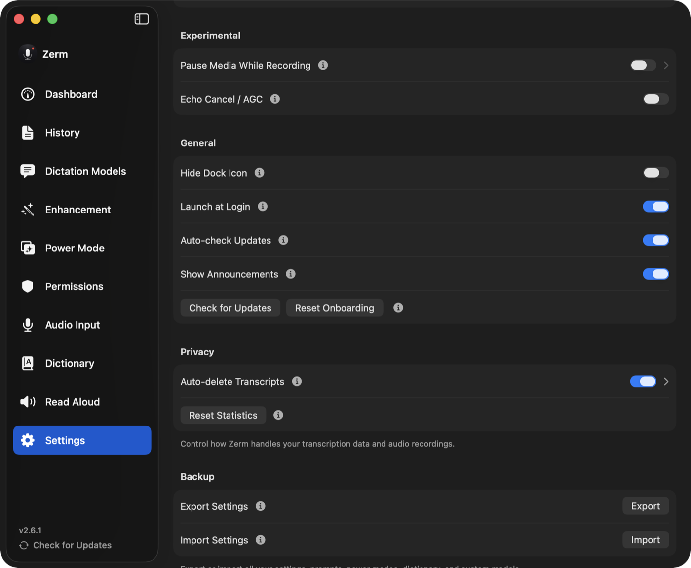

Privacy
Privacy and retention
What Zerm keeps, for how long, and which of the two auto-delete settings actually deletes what.
Zerm stores two different things after a recording or a
transcribed file, and they are governed by two different
settings, both in Settings → Storage. Confusing them is the usual reason people find audio still on disk
when they expected it gone, or history emptier than they wanted.
- The transcript — the text, plus its timestamp, duration, model, and enhancement
result. Stored in the app's local database. A transcribed file also keeps its speakers
and timings in a small file next to the audio. - The audio — the recording itself, as a file in the app's Application Support
folder.
Both stay on your Mac. Neither is uploaded anywhere by Zerm.

Transcript auto-delete
Setting: "Auto-delete Transcripts", off by default.
When enabled, transcripts older than Delete After are deleted, and their audio goes
with them. Choose Immediately, 1 hour, 1 day, 3 days, or 7 days; the default is 1 day.
Run Cleanup Now applies the period straight away.
The sweep runs at launch and again after every completed transcription, so a long
uptime does not let old entries linger.
Set it to Immediately and each transcript is deleted the moment it completes — the
text goes to your cursor and nothing is kept in history at all. A transcribed file stays
viewable in the Transcribe File list until you quit, then it is gone too. If you want a
dictation tool that keeps no record, this is the setting.
Enabling transcript auto-delete also cleans up orphan audio files: recordings left
on disk with no transcript pointing at them.
Audio auto-delete
Setting: "Auto-delete Audio Files", on by default, 14 days.
This deletes the recordings and keeps the transcripts. The history entry survives with
its text intact; only the playable audio and its disk space go away. Keep Audio For
offers 1, 3, 7, 14, or 30 days.
Retry Last Transcription and re-transcribing from History need the audio, so keep it at
least as long as you might want those. A transcribed file still opens without its audio,
just without playback.
The check runs at launch and once a day thereafter. You can also run it on demand from
Settings, which first tells you how many files it would remove and how much space that
frees.
This is the setting most people want. Audio is the bulk of the disk usage and the part
with the most sensitive content, while the transcript is the part that is actually
useful to search later.
The two together
| Transcript text | Audio file | |
|---|---|---|
| Transcript auto-delete | deleted | deleted |
| Audio auto-delete | kept | deleted |
Running both is reasonable: audio at 14 days for the disk space, transcripts at a longer
period for the searchable record.
Usage statistics are separate
Your usage statistics — words dictated, time saved, sessions, words read aloud — live in
their own store, deliberately apart from the transcripts. The Dashboard shows them for
7 Days, 30 Days, 12 Months, or All Time, and its totals and time saved
follow the range you pick.
Deleting transcripts does not affect your statistics. That is deliberate. The
dashboard used to recompute every number by scanning surviving transcript rows, so
turning on aggressive retention meant watching your totals evaporate — the privacy
setting and the dashboard were effectively mutually exclusive. They are now independent:
totals are accumulated as work completes, never recomputed from history. You can keep no
transcripts at all and still have an accurate dashboard.
What is stored is one row per day of counts and durations. No transcript text, no audio,
nothing that could reconstruct what you said — which is why it stays safe to keep even
when you are running zero retention.
Two caveats for long-time users. Durable statistics started in Zerm 2.7. The upgrade
to 2.7 backfilled what it could from the transcripts that still existed, so anything an
earlier retention sweep had already deleted could not be recovered — the all-time totals
for those installs begin at that upgrade rather than at first launch. Read Aloud totals
from before 2.7 were only ever kept as a lifetime count, so they are attributed to the
upgrade date; the all-time figure is right, the daily breakdown for that stretch is
not.
Clearing your statistics
Reset Statistics, in Settings → Storage, permanently clears every recorded day along
with the Read Aloud counters. Nothing survives it and it cannot be undone.
It does not touch your transcripts or your audio — those have their own controls, above.
The three are independent in both directions: deleting history leaves your statistics
alone, and resetting your statistics leaves your history alone.
Cleared statistics stay cleared. Keeping transcripts does not repopulate them later —
the one-time backfill described above does not run a second time, because rebuilding
your totals from surviving history is the opposite of what clearing them means.
Deleting things yourself
Nothing here replaces doing it by hand. From History you can delete individual
transcripts or clear the lot, and each deletion takes its audio file with it. Read Aloud
keeps its own history of what you listened to, which you can clear from its page.
Meeting recordings
Meetings was removed in Zerm 2.8.6. The first time 2.8.6 opens, it permanently deletes
the meeting recordings, transcripts, and settings that earlier versions saved. Dictation
recordings and History are not affected.
What leaves your Mac
Only what you configure:
- Local transcription — Parakeet, Whisper, Apple Speech — never sends audio
anywhere, whether you dictate or transcribe a file. Speaker identification in
Transcribe File runs on your Mac too. - Cloud transcription sends the audio to the provider you selected, and only once
you have added a key and chosen that model. That includes files you transcribe with a
cloud model. - Enhancement sends the transcript, the active prompt, and whichever context sources
you switched on. The on-device provider sends nothing at all. - Read Aloud sends the text to a cloud voice provider if you selected one; the
bundled local voice does not. - Announcements and update checks fetch from this site and from GitHub Releases.
They send no content and can be switched off in Settings.
More detail on the context sources is on the
contextual awareness page.